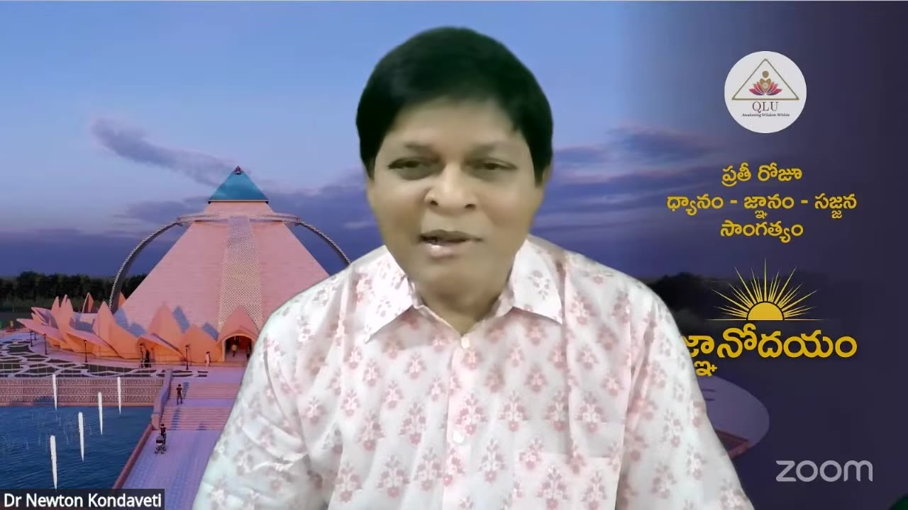

01 · Monthly Wisdom & Key Teachings · Full story
The Spiritual Message in Bathukamma — From Asuric Nature Toward the Principle of Hara
Dear friends! Coming together every day during Brahmi Muhurta to meditate, gain knowledge, and encourage ourselves in spiritual practice is immensely valuable. The Jnanodayam programme continues to offer us this opportunity. Now, on the occasion of Devi Navratri and Vijayadashami, let us explore the significance of these festivals and the deeper meaning behind them.
Speaker: Brahmarshi Chakravarthy Dr. Newton Kondaveti
Topic: The Inner Meaning of Devi Navratri — From Festival to Inward Spiritual Practice
Original Video: https://www.youtube.com/watch?v=zkXnkP0fIfA
01. Let Us Understand the Deeper Purpose of a Festival
Dear friends! Coming together every day during Brahmi Muhurta to meditate, gain knowledge, and encourage ourselves in spiritual practice is immensely valuable. The Jnanodayam programme continues to offer us this opportunity. Now, on the occasion of Devi Navratri and Vijayadashami, let us explore the significance of these festivals and the deeper meaning behind them.
In India, we celebrate festivals with great joy. We dance, decorate our surroundings, and take part in celebrations. But if we celebrate a festival merely as a ritual and return to our old way of life the very next day, we have not received its full benefit. Every festival has a meaning; every festival has a higher purpose. Our ancestors, sages, and yogis passed on many subtle truths they had realised through experience, giving them the form of customs and traditions.
Navratri is especially important for meditators and seekers of Self-knowledge. When we understand the spiritual principle behind an outward celebration, the festival itself becomes part of our practice. Listening to a story simply as a story gives us one level of understanding. But when we discover the story behind the story—the spiritual secret hidden within it—our understanding becomes much deeper.
02. Bathukamma — Honouring Life and the Creative Power of Existence
In the Telangana region, people celebrate the Bathukamma festival during this season. Consider the word Bathukamma. Bathuku means life. We can connect this name with the idea of celebrating the life we have been given. Whenever a word, a custom, or a tradition takes shape, there is a deeper significance behind it. We must discover that significance.
In this context, let us recall the account of Sri Krishna's birth in the Bhagavatam. According to the Puranic narrative, a soul plan had been formed for Sri Krishna to incarnate as Devaki's eighth child and bring about the destruction of Kamsa. The children born before him had died at Kamsa's hands. When the eighth child was born, the infants were exchanged. The baby girl who came into Kamsa's hands is described in the story as Mahamaya, Jaganmata, or Durga Mata.
The Purana describes Kamsa seizing the infant by her feet and attempting to kill her. In the teaching we are discussing, it is said that Mahamaya touched the Earth at that moment, asked Mahavishnu what her role on Earth would be, and was told that Parameshwari would have a very important role to play in the world in the times to come. Rather than seeing this only as an outward event, we should also understand it as a story pointing to the power of the Divine Mother that pervades all creation.
Spiritual tradition explains that creation manifests from the fundamental principle we call Parameshwara and Parameshwari. We should learn to perceive the life force and creativity present throughout nature as expressions of Jaganmata. That is why it is important to explore the Puranic stories associated with our festivals from a meditative and spiritual perspective.
A thought to remember: Look beyond the characters in a story and understand the principles of creation that those characters represent.
03. Immersion — The Principle of Creation, Sustenance, and Dissolution
During festivals, we fashion a form of the deity, decorate it, worship it, and finally immerse it in water. Recently, during the Ganesh festivities, we also performed Ganesh immersion. We should not regard immersion merely as a ritual marking the end of a celebration. Behind it lies the profound principle of creation, sustenance, and dissolution—srishti, sthiti, and laya.
Whatever is created remains in existence for a time and eventually dissolves. Everything that assumes a form must one day release that form. The same principle applies to our physical bodies. We have come into this world, and one day we will leave this physical form behind. Immersion therefore reminds us of this ceaseless cycle in nature.
If we observe the sequence of forming an image, decorating it, worshipping it, and finally immersing it, we can see a pattern resembling creation, sustenance, and dissolution. When we examine the practices established by our ancestors from this perspective, the yogic secrets within them gradually become clear.
04. The Asura Who Devoured Himself — A Symbol of the Dissolution of Ego
Whenever I visit temples, I observe their sculptures, architectural features, and the deeper meanings behind them. Sometimes I also meditate there, trying to understand the energy of the place through direct experience. On one such occasion, I noticed a sculpture of an asura in a Shiva temple.
This asura had a strange nature: he devoured everything he saw. Whatever came before him, he consumed. Eventually, when nothing else remained to eat, he began devouring his own body. First his legs, then his arms, and then the rest of his body—until he had eaten himself up to the neck. Only his head remained. At that point, he became aware that if he consumed even that, his very existence would come to an end.
There is a symbol here that relates to spiritual practice. We have taken form in creation as individual beings. We have names, hometowns, relationships, and countless identifications such as “this is mine” and “this is me.” By gathering these identifications together, we construct a limited definition of “I.” That is the sense of ego.
As we progress along the path of meditation, this limited sense of “I” must gradually dissolve. There is no need to understand the act of devouring oneself in a literal, physical sense. It is a spiritual metaphor for the dissolution of ego, personal limitations, and self-centred identities. The journey towards liberation means moving beyond this small sense of “I” into the vastness of our true Self.
05. The Manipura Chakra and the Hara Centre — Going Beyond Personal Will
Where does the ego operate? From where does the personal will arise that insists, “I,” “mine,” and “I alone must do this”? In this context, we can speak of the Manipura chakra and the Hara centre in the abdominal region. We associate this centre with personal will.
We can also look at the episode of Ravana's defeat in the Ramayana as a symbol. In the narrative, cutting off Ravana's heads does not bring about his death; his defeat finally comes when an arrow strikes the abdominal region. We can examine this story through the spiritual symbolism of ego and the centre of will. This interpretation should be understood as yogic symbolism used in the discourse, not as a medical claim about human anatomy.
Our personal will constantly operates through thoughts such as “I must do this,” “I must achieve that,” and “I want this.” But that will alone is not our true identity. We are not limited to our names, hometowns, or physical bodies. Spiritual knowledge teaches that the Self is boundless and all-pervading. To experience that vastness, we must go beyond the limited idea of “I.”
This is the inner meaning of immersion: as we watch an outwardly created form dissolve, we are reminded that the ego within us, too, must gradually melt away.
06. Why Are the Nine Days Called “Nights”?
A question arises here: why are the celebrations of the Divine Mother called Navratri—the “nine nights”? Should we not practise during the daytime? What is so special about the night?
Ordinarily, we associate night with tamas, sleep, and rest. But for yogis and meditators, the night can be seen differently. When the world is asleep, there is quiet all around. There are fewer interruptions from everyday activities. While others are sleeping, a practitioner has an opportunity to journey inward.
Practices such as waking at three in the morning to meditate and setting aside time for spiritual practice during Brahmi Muhurta gain significance from this perspective. During the day, we have work, family responsibilities, and other worldly activities. We can use the night for spiritual practice. For a seeker, therefore, night is not merely a time for sleep; it can also be a favourable time for the inward journey.
This concludes Part 1 of the reviewed edition. The next part should continue in the order of the original discourse, covering the colours of Bathukamma, the many names and forms of Jaganmata, the deeper meaning of the word Durga, the significance of the number nine, the nine avaranas, the three gunas, and other teachings.
Translation note: This English version translates the reviewed Telugu article faithfully. It does not independently reconstruct missing passages from the full source transcript.